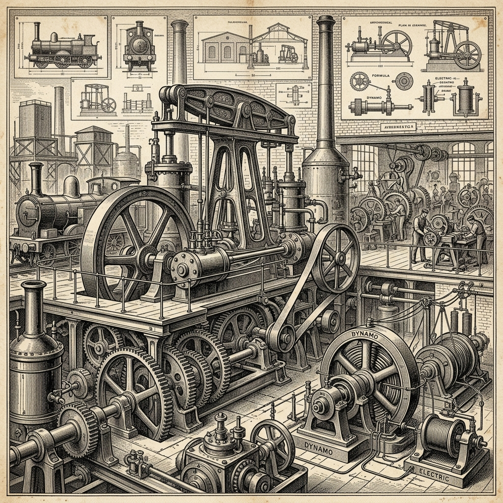

Độc quyền và độc quyền nhà nước
Khảo sát lý luận kinh tế chính trị Mác – Lênin về sự hình thành độc quyền và phân tích thực tiễn vai trò, nguy cơ của doanh nghiệp nhà nước tại Việt Nam hiện nay.
2. Lý thuyết độc quyền trong nền KTTT
Phân tích bản chất, nguyên nhân hình thành và cơ chế hoạt động của các liên minh độc quyền.
1. Độc quyền trong nền KTTT
Là sự liên minh giữa các doanh nghiệp lớn, chi phối sản xuất, tiêu thụ hàng hóa và áp đặt giá cả nhằm thu lợi nhuận độc quyền cao.
Theo quan điểm Mác - Lênin, tự do cạnh tranh dẫn đến tập trung sản xuất, và khi tập trung sản xuất phát triển đến một mức độ nhất định thì sẽ hình thành độc quyền.
2. Nguyên nhân hình thành
Độc quyền hình thành khách quan từ 3 động lực chính trong nền kinh tế thị trường:
- Lực lượng sản xuất: Tiến bộ KH-KT làm xuất hiện máy móc mới, đòi hỏi vốn lớn, quy mô lớn.
- Cạnh tranh gay gắt: Đào thải doanh nghiệp yếu, ép doanh nghiệp lớn liên kết, sáp nhập để tồn tại.
- Khủng hoảng & Tín dụng: Loại bỏ đơn vị yếu kém; tín dụng thúc đẩy quá trình tập trung vốn.

3. Giá cả và lợi nhuận
Các tổ chức độc quyền áp đặt cơ chế giá cả để thu lợi nhuận độc quyền cao:
- Áp đặt giá cả: Áp đặt giá bán cao khi bán hàng; Giá mua thấp khi mua nguyên liệu, sức lao động.
- Nguồn gốc lợi nhuận: Chủ yếu từ lao động thặng dư của công nhân và sự bóc lột người lao động.
3. Độc quyền Nhà nước trong nền kinh tế thị trường
Hình thức kết hợp giữa sức mạnh chính trị của bộ máy nhà nước và sức mạnh kinh tế của độc quyền tư nhân.
■ 4. Độc quyền nhà nước
Là hình thức độc quyền trong đó nhà nước nắm giữ hoặc kiểm soát những lĩnh vực then chốt của nền kinh tế nhằm duy trì sức mạnh kinh tế, chính trị và xã hội.
■ Cơ sở kết hợp
Trong chủ nghĩa tư bản, độc quyền nhà nước hình thành trên cơ sở kết hợp giữa: Sức mạnh của nhà nước, Độc quyền tư nhân, Độc quyền nhóm, và Tư bản tài chính.
■ 5. Nguyên nhân hình thành độc quyền nhà nước
Sản xuất phát triển ở quy mô lớn, cần có sự điều tiết từ một trung tâm, vì vậy nhà nước phải can thiệp vào kinh tế.
Một số ngành (năng lượng, giao thông, giáo dục, nghiên cứu cơ bản) vốn lớn, thu hồi chậm, lợi nhuận thấp nên nhà nước phải đảm nhận.
Sự thống trị độc quyền tư nhân làm mâu thuẫn xã hội gay gắt. Nhà nước phải đưa ra chính sách xã hội (trợ cấp, phúc lợi...) để ổn định.
Sự mở rộng liên minh độc quyền quốc tế gây xung đột lợi ích quốc gia, buộc nhà nước tham gia điều tiết quan hệ kinh tế và quốc tế.
6. Bản chất của ĐQNN trong Chủ nghĩa Tư bản
Độc quyền nhà nước trong chủ nghĩa tư bản nhằm phục vụ lợi ích của các tổ chức độc quyền tư nhân và duy trì sự tồn tại của chủ nghĩa tư bản.
Phục vụ lợi ích tư nhân
Nhằm phục vụ lợi ích của các tổ chức độc quyền tư nhân và duy trì sự tồn tại của chủ nghĩa tư bản.
Kết hợp kinh tế & chính trị
Thể hiện sự kết hợp giữa: Quyền lực kinh tế của các tổ chức độc quyền và Quyền lực chính trị của nhà nước.
Sự phụ thuộc của nhà nước
Sự phụ thuộc ngày càng lớn của nhà nước vào các nhóm tư bản độc quyền.
5. Tác động tích cực & tiêu cực của độc quyền
Độc quyền mang bản chất hai mặt kinh tế, tác động đa chiều đến sự phát triển của xã hội.
■ 7. Tác động tích cực
- Thúc đẩy KH-KT: Do có vốn lớn, có khả năng đầu tư vào nghiên cứu, phát minh và ứng dụng công nghệ mới.
- Tăng năng suất lao động: Ứng dụng công nghệ hiện đại, tổ chức sản xuất lớn, giảm chi phí và nâng cao năng lực cạnh tranh.
- Thúc đẩy sản xuất lớn hiện đại: Tập trung nguồn lực tài chính, đầu tư vào các ngành trọng điểm, phát triển nền sản xuất quy mô lớn.
■ 8. Tác động tiêu cực
- Cạnh tranh không hoàn hảo: Áp đặt giá bán cao, giá mua thấp, hạn chế sản lượng, tạo cung cầu giả tạo, gây thiệt hại xã hội.
- Kìm hãm tiến bộ kỹ thuật: Các tổ chức độc quyền có thể không muốn đổi mới nếu điều đó đe dọa vị thế độc quyền của họ.
- Gia tăng phân hóa giàu nghèo: Chính sách kinh tế - xã hội có thể phục vụ lợi ích của thiểu số thay vì đa số nhân dân lao động.
6. Đối chiếu lý luận với thực tiễn Việt Nam
Phân tích điểm khác biệt bản chất của các tập đoàn kinh tế nhà nước Việt Nam trong nền kinh tế thị trường định hướng XHCN.
Độc quyền Nhà nước
Hình thành nhằm phục vụ lợi ích của các tổ chức độc quyền tư nhân và tiếp tục duy trì, phát triển chủ nghĩa tư bản.
Tập đoàn kinh tế Nhà nước
Thuộc sở hữu toàn dân, do Nhà nước làm đại diện chủ sở hữu, hoạt động nhằm phục vụ lợi ích của nhân dân, quốc gia, dân tộc và đóng vai trò "chủ đạo" để định hướng nền kinh tế.
■ 1. Điểm tương đồng giữa lý luận và thực tiễn
Chiếm lĩnh các lĩnh vực then chốt
Các Tập đoàn kinh tế nhà nước (EVN - Điện lực, PVN - Dầu khí, TKV - Than Khoáng sản) nắm giữ những ngành công nghiệp cốt lõi, bảo đảm an ninh năng lượng và huyết mạch quốc gia.
Đầu tư lĩnh vực tư nhân không làm
DNNN đóng vai trò chủ đạo xây dựng kết cấu hạ tầng (đường sắt, cơ sở hạ tầng viễn thông vùng sâu vùng xa, công trình điện lưới quốc gia).
Công cụ điều tiết vĩ mô
DNNN là lực lượng vật chất quan trọng để Nhà nước điều tiết, bình ổn thị trường và ứng phó với khủng hoảng.
7. Nguy cơ Độc quyền & sự Kém hiệu quả tại Việt Nam
Các rủi ro và bài học thực tiễn cần khắc phục khi doanh nghiệp nhà nước nắm giữ vị thế thống trị ngành.
8. Báo cáo sử dụng công cụ AI & Kiểm chứng nguồn
Công bố liêm chính học thuật và kê khai chi tiết mức độ can thiệp của AI trong sản phẩm thuyết trình.
■ 8.1. Bảng phân định sử dụng AI
| STT | Công cụ AI | MỤC ĐÍCH SỬ DỤNG | PROMPT CHÍNH | KẾT QUẢ | CHỈNH SỬA CỦA SV |
|---|---|---|---|---|---|
| 1 | NotebookLM | Phân tích và tổng hợp nội dung liên quan đến chủ đề thuyết trình | “Tóm tắt nội dung chương 4” | Bản tóm chương 4 | Lọc bỏ nội dung lý thuyết không liên quan đến đề tài |
| 2 | Gemini | Tổng hợp thông tin về Nhà nước Việt Nam của doanh nghiệp Nhà nước Việt Nam và phải lấy thông tin từ nguồn có uy tín | “Phân tích vai trò và nguy cơ” | Bản phân tích theo yêu cầu | Đối chiếu với lý thuyết, tìm ra đúng ý, đưa vào slide. |
■ 8.2. Kiểm chứng thông tin AI bằng nguồn chính thống
■ 8.3. AI chỉ đóng vai trò hỗ trợ, không thay thế toàn bộ
- Tạo bản thảo bố cục HTML ban đầu
- Gợi ý CSS styles và animations
- Tạo hình ảnh minh họa trang trí
- Hỗ trợ tóm tắt nội dung lý luận
- Nghiên cứu và biên soạn nội dung chuyên sâu
- Thiết kế lại giao diện theo ý tưởng nhóm
- Đối chiếu, kiểm chứng mọi thông tin
- Quyết định bố cục, trình bày cuối cùng
■ 8.4. Cam kết và phân định rõ ràng
Nguồn tham khảo chính
- Bộ Giáo dục và Đào tạo. Giáo trình Triết học Mác – Lênin. NXB Chính trị Quốc gia Sự thật, 2021.
- Đảng Cộng sản Việt Nam. Văn kiện Đại hội đại biểu toàn quốc lần thứ XIII. NXB Chính trị Quốc gia Sự thật, 2021.
- V.I. Lênin. Chủ nghĩa đế quốc, giai đoạn tột cùng của chủ nghĩa tư bản. Toàn tập, NXB Chính trị Quốc gia Sự thật.
- Tư liệu báo cáo tài chính và hoạt động xã hội của EVN, Petrolimex, Vietcombank giai đoạn 2021-2025.